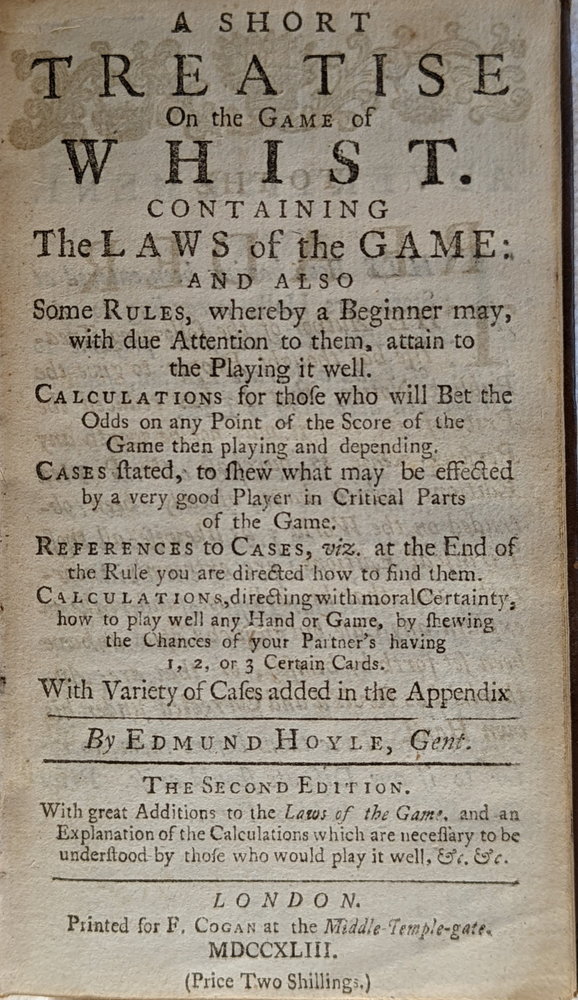

A Descriptive Bibliography of Edmond Hoyle
Copyright © 2014-26 by David Levy
(page updated 2026-01-30)User Guide
Whist.1.2
A Short Treatise on the Game of Whist, printed for F. Cogan, first London edition, second issue, 1743.
 |
Title: | A SHORT | TREATISE | On the Game of | WHIST. | CONTAINING | The LAWS of the GAME: | AND ALSO | Some Rules, whereby a Beginner may, | with due Attention to them, attain to | the Playing it well. | Calculations for thoſe who will Bet the | Odds on any Point of the Score of the | Game then playing and depending. | Cases ſtated, to ſhew what may be effected | by a very good Player in Critical Parts | of the Game. | References to Cases, viz. at the End of | the Rule you are directed how to find them. | Calculations, directing with moral Certainty, | how to play well any Hand or Game, by ſhewing | the Chances of your Partner's having | 1, 2, or 3 Certain Cards. | With Variety of Caſes added in the Appendix | [rule] | By Edmund Hoyle, Gent. | [rule] | The Second Edition. | With great Additions to the Laws of the Game, and an | Explanation of the Calculations which are neceſſary to be | underſtood by thoſe who would play it well, &c. &c. | [rule] | LONDON. | Printed for F. Cogan at the Middle-Temple-gate. | MDCCXLIII. | (Price Two Shillings.) |
| Collation: | 12o: A6(A2+1) B6 χ2(χ2+5) C–D12 E8 [$1–5 (−A2,4,5,B4,5,E5) signed; signing A2+1 as A2]; 52 leaves, pp. [10 ] [1] 2–10, χ5–10 11–86 [87–88] [χ5–10 numbered with prefixed *] |
| Contents: | Signature (Page) Reference | Contents | Signature (Page) Reference | Running Titles |
| A1r | blank | |||
| A1v | ‘[headpiece] | TO THE | READER. | [...] | [autograph of Edmond Hoyle]’ | |||
| A2r | title | |||
| A2v | Advertisement | |||
| A2+1r–A4r | ‘[headpiece] | THE | CONTENTS | [...]’ | A2+1v–A4r | ‘The CONTENTS.’ | |
| A4v | blank | |||
| A5r–B6v (1–χ10) | ‘[headpiece] | A SHORT | TREATISE | On the GAME of | WHIST. | [...]’ | A5v–B6v (2–χ10) | ‘A ſhort Treatise on | the Game of Whist.’ | |
| χ1r–E8v (11–88) | see Whist.1.1 (1742) | χ1r–E7v (11–86) | see Whist.1.1 (1742) |
| Catchwords: | A6v(4) Second [2d.] |
| Publisher: | Francis Cogan |
| Printer: | John Watts, Charles Jephson (ornaments) |
| Notices: | 1743-03-05 General Evening Post: "The Purchasers of the first edition may have the additions to complete their books, on producing that bought of the author, and paying one shilling." |
| Price: | 1s. (advertisement) |
| References: | ESTC N491691, Horr 643 (not distinguished from Whist.2), Jessel 770 (not distinguished from Whist.2), Marshall s7 no.8 p42 (1889-07-20), Rather 5 (not distinguished from Whist.2) |
| Copies Seen: | O [Jessel f.534]; Levy [1687] |
| Other Copies: | Sings; CtY-BR [NLp80 742hb] (Beinecke Library); TNJ |